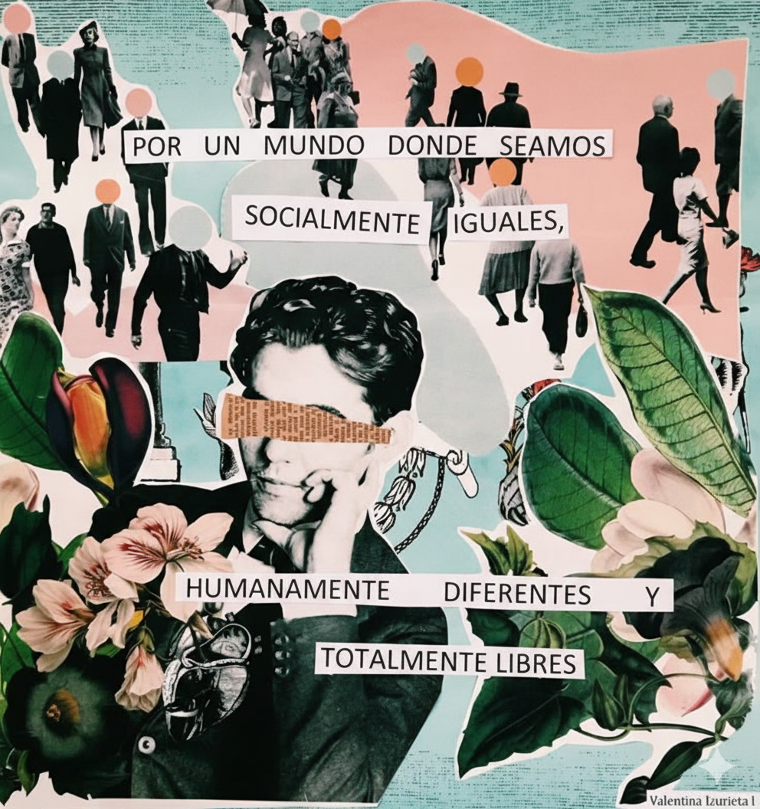

Construyendo inclusión desde lo cotidiano
Creo en el acompañamiento como una práctica sensible, basada en el vínculo, el cuidado y la escucha.
Trabajo en el Campo de la Salud y Educación, con experiencia en diversas instituciones. Mi objetivo es promover la inclusión de niños, niñas, adolescentes y jóvenes en sus entornos cotidianos.
Esta página es una invitación a conocer lo que hago y cómo acompaño cada proceso.
Contactame
